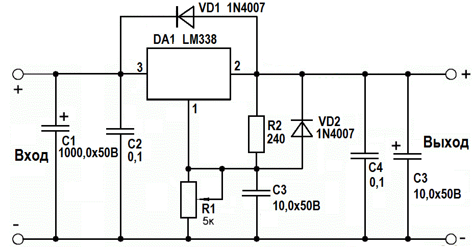

Cтабилизатор напряжения на LM338
Для питания различных электронных устройств нужен источник питания, напряжение на выходе которого можно регулировать в широких пределах. При этом он должен иметь возможность выдавать большой ток и минимальные пульсации на выходе. Для этих целей подойдёт линейный стабилизатор напряжения на микросхеме LM338 (рис. 1), которая обеспечивает ток до 5 А, имеет защиту от перегрева и короткого замыкания на выходе.

Рис. 1 - Схема стабилизатора напряжения на LM338
Микросхема LM338 имеет три вывода – вход (3), выход (2) и регулирующий (1). На вход подаём постоянное напряжение определённой величины, а с выхода снимаем стабилизированное напряжение, величина которого задаётся переменным резистором R1. Напряжение на выходе регулируется от 1,25 В до величины входного, с вычетом 1,5 В: если на входе, например, 24 В, то на выходе напряжение будет меняться в пределах от 1,25 до 22,5 В. Подавать на вход более 30 В не следует, микросхема может уйти в защиту. Чем больше ёмкость конденсаторов на входе, тем лучше. Ёмкость конденсаторов на выходе микросхемы должна быть небольшой, иначе они будут долго сохранять заряд и напряжение на выходе будет регулироваться неверно. При этом каждый электролитический конденсатор должен быть зашунтирован плёночным или керамическим с малой ёмкостью (на схеме это С2 и С4). При использовании схемы с большими токами микросхему обязательно нужно установить на радиатор. Если токи небольшие – до 100 мА, радиатор не потребуется.
Таблица 1
| Обозначение | Наименование | Номинал | Количество | Примечание |
|---|---|---|---|---|
| DA1 | Микросхема | LM338 | 1 | |
| C1 | Конденсатор электролитический | 1000 мкФ / 50 В | 1 | |
| C2, C4 | Конденсатор | 0,1 мкФ | 2 | |
| C3, C5 | Конденсатор электролитический | 10 мкФ / 50 В | 2 | |
| R1 | Резистор переменный | 5 кОм | 1 | |
| R2 | Резистор постоянный | 240 Ом / 0,25 Вт | 1 | 0,5 Вт |
| VD1, VD2 | Диоды | 1N4007 | 2 | на ток 1 А |
Источники:
sdelaysam-svoimirukami.ru - Мощный линейный стабилизатор напряжения